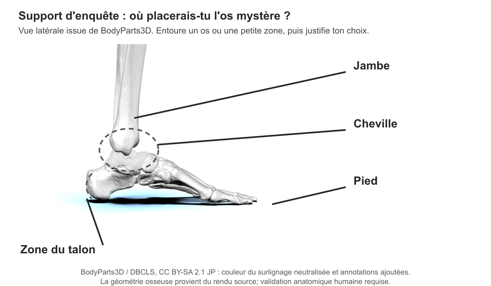
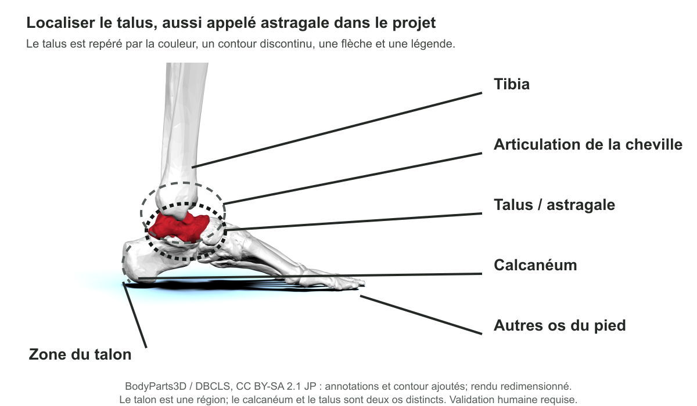

Vue latérale : la forme visible dépend de l'angle.
BodyParts3D / DBCLS, CC BY-SA 2.1 JP, via Wikimedia Commons.
Activité 1 · Support images
Page historique conservée pour compatibilité. Utiliser désormais les supports canoniques ci-dessous.
Vue latérale : la forme visible dépend de l'angle.
BodyParts3D / DBCLS, CC BY-SA 2.1 JP, via Wikimedia Commons.

Vue antérolatérale : observer les reliefs et surfaces articulaires.
BodyParts3D / DBCLS, CC BY-SA 2.1 JP, via Wikimedia Commons.

Support neutre : proposer une localisation avant la révélation.
Dérivé BodyParts3D / DBCLS, CC BY-SA 2.1 JP; annotations Histoires d'os.

Support de vérification : distinguer talus, calcanéum et zone du talon.
Dérivé BodyParts3D / DBCLS, CC BY-SA 2.1 JP; validation anatomique humaine requise.

Repérer une région comparable dans le membre postérieur sans identifier un os précis.
Museum of Veterinary Anatomy FMVZ USP / Wagner Souza e Silva; édition antérieure Rodrigo Tetsuo Argenton; CC BY-SA 4.0; fichier redimensionné.
Le pied de mouton Dundee, la planche LeConte 1922 et la jambe de vache historique ne sont plus affichés ici : leur chaîne de droits ou leur documentation reste à résoudre.